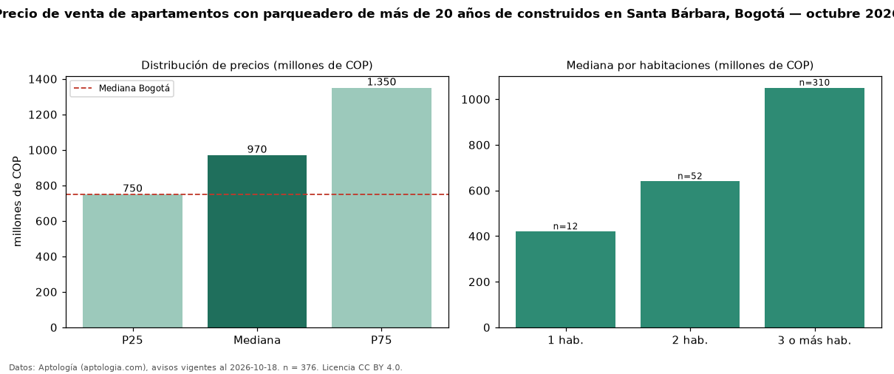

Precio de venta de apartamentos con parqueadero de más de 20 años de construidos en Santa Bárbara, Bogotá — octubre 2026
COP 970 millones es el precio mediano de apartamentos con parqueadero de más de 20 años de construidos en venta en Santa Bárbara (localidad de Usaquén), Bogotá (n = 376 avisos). Prácticamente coincide con la mediana de los apartamentos con parqueadero en venta de Santa Bárbara (COP 990 millones, n = 1.100); este segmento reúne el 34 % de esos avisos. Por metro cuadrado, la mediana es COP 6,36 millones/m² (n = 373), 10 % por debajo de los apartamentos con parqueadero en venta de Santa Bárbara (COP 7,10 millones/m²). El área mediana anunciada es 164 m². El segmento con más oferta es el de 3 o más habitaciones (310 avisos, mediana COP 1,05 mil millones); pasar de 1 habitación a 3 o más habitaciones cambia la mediana +150 %. La administración mediana declarada es COP 1,10 millones al mes (n = 353). La mitad central de los avisos va de COP 750 millones a COP 1,35 mil millones (razón 1,8), una dispersión moderada. El estrato más frecuente es 6 (75 % de los avisos con estrato). Datos: Aptología (aptologia.com), CC BY 4.0 — https://www.aptologia.com/venta/bogota/santa-barbara. Archivos: PDF, CSV con las cifras y gráfica PNG.

| Avisos únicos | 376 |
|---|---|
| Percentil 25 | COP 750.000.000 |
| Mediana | COP 970.000.000 |
| Percentil 75 | COP 1.350.000.000 |
| Mediana por m² | COP 6.358.381 |
Fuente: avisos vigentes de portales inmobiliarios recopilados por Aptología, deduplicados (mínimo 30 avisos únicos por celda). Precios pedidos, no cerrados. Fecha: 2026-10-18.